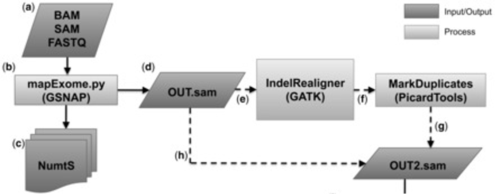

Pipeline Steps
1. Extract mtDNA
a. BAM Processing BAMQL
BAMQL is a package or query language published by the Boutros lab for extracting reads from BAM files.1-2
b. CRAM processing with SAMTools
SAMTools is a suite of programs for interacting with high-throughput sequencing dat3. This pipeline uses the SAMTools View command to extract reads from CRAM files.
2. Align mtDNA with MToolBox

MToolBox is used to align the extracted mitochondrial reads. It can accept as input either raw data or prealigned reads.4 In both cases, reads are mapped by the mapExome.py script to a mitochondrial reference genome. The current pipeline uses the Reconstructed Sapiens Reference Sequence(RSRS).5 This generates a dataset of reliable mitochondrial aligned reads.
3. Call mtSNV with mitoCaller
While human diploid cells have two copies of each chromosome, human cells can have a varying quantity of mtDNA ranging from 100-10,000 copies. The resultant high coverage in bulk sequencing data allows for the sensitive detection of low frequency variation seen with mitoCaller. mitoCaller is a script which uses a mitochondrial specific algorithm designed to account for these unique factors to identify mtDNA variants.6-7
4. Convert mitoCaller output with Mito2VCF
mitoCaller2VCF converts results from mitoCaller to VCF format as the output of mitoCaller is a TSV file and must be processed to increase legibility.6
5. Call Heteroplasmy on Paired Samples
Heteroplasmy is the presence of more than one type of organellar genome (mitochondrial DNA or plastid DNA) within a cell or individual. This script compares heteroplasmy using the normal sample as a reference point.